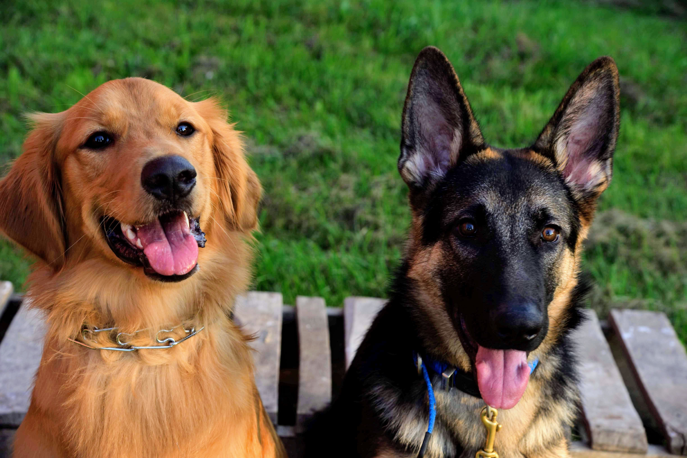
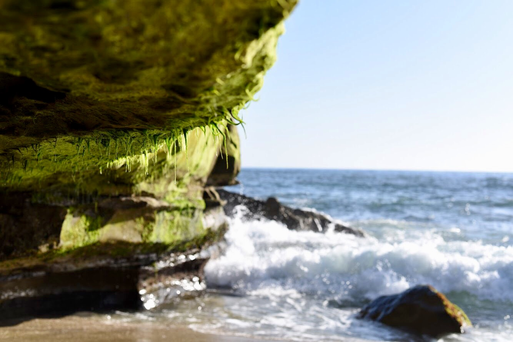

Nikon Photos
Last semester, I learned how to shoot with a DSLR camera on a Nikon D750, and this summer, I caved and bought one for myself. There are definitely cheaper cameras of the same quality, so if you're looking to buy your own camera, don't feel pressured to spend $2000. That being said, the D750 has great quality photos and I love the weight of it in my hands.
Benefits of using a DLSR camera
- Ability to adjust shutterspeed, apeture, and ISO
- Quality of most pictures is clearer over a variety of distances
- Shooting in RAW creates more widely editable images

